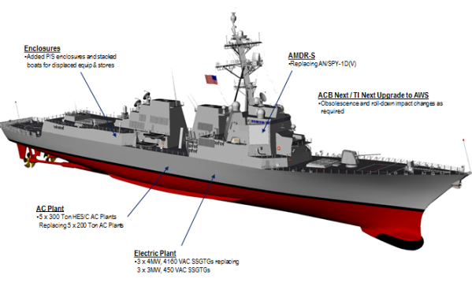

2014-09-25 23:09:00
四天前，美國《國防新聞》報導了國軍的新造艦計劃，隨後台灣諸報均引用了該文，例如這篇中時的文章：http://www.chinatimes.com/newspapers/20140923000395-260102。其中最重要的内容是“未來20年內，將建造4艘1萬噸的驅逐艦，逐步汰換已老舊的4艘紀德艦，新型的驅逐艦完全國艦國造，並將配載神盾戰系，1艘造價約150億元，是美神盾艦價格的三分之一，初步構想是先建1艘，再依序建造後續。”
我等了三天，但是國防部没有出面闢謠，所以我們可以假定這消息的確代表了真實的海軍採購方案。由於這個方案與現實完全没有交集，在國防需要，技術能力和費用預算三方面上都是癡人說夢，如果被批准，其結果必然是20年後，花了數倍於預算的金銭，養肥了無數的貪官，而對台灣的國防毫無助益。台灣近年來，政治混亂，經濟停滞，國民必須要仔細考慮，國家的財政是否還經得起這般折騰？
首先，讓我們看看什麼是萬噸驅逐艦。世界上目前在役的萬噸驅逐艦其實只有一個設計，三個型號，就是美軍的伯克級（Arleigh Burke Class），它的日本版仿製品愛宕級和韓國版仿製品世宗大王級驅逐艦。伯克級是設計來保護航母戦鬥群的防空驅逐艦；歐洲，俄國和中共最新最大的主戦防空艦隻，有的叫驅逐艦，有的叫護衛艦，如英國的Type 045，法意合作的Horizon Class，俄國的Sovremenny Class和中共的052D級，都只有7000-8000噸。這是因為他們不須要跟着航母戦鬥群全球巡弋；在近海防禦或以小編隊在遠洋進行攻勢作戦，萬噸級的艦隻太大太貴，没有經濟效率。日本有重整軍備、重建太平洋海權的野心，有先進的民用造船和煉鋼工業，卻又没有自行開發先進艦載裝備的能力，是美國的一級盟友，買軍備時被敲竹槓的程度最低，照抄伯克級是合理的。韓國人喜歡和日本人評比，其他的條件基本上等同日本，所以造韓國版的伯克級也不是太離譜。以台灣的國際環境和技術能力，國軍很明顯地是想模仿日韓，製造台灣版的伯克級，可是台灣的各項條件和日韓一様嗎？
要製造伯克級，要考慮五項主要的分系統，即艦體，動力，雷達，C4ISR，和飛弹。其中最便宜，最簡單，也是日韓唯一能自行設計製造的，是艦體。其他四項都必須從美國引進。但是簡單如艦體設計，大型軍艦上還是有很多只能從經験上學得的法則，例如損害管制，是民用船隻根本没有的考慮。日韓的所謂自行設計，仍然必須讓美國或歐洲（世宗大王級是與法國的Thales合建的）的軍艦製造商仔細複查，否則造出來的東西中看不中用。讓我們假設美國願意幫助中船，而且竹槓敲得不太過分，那麼中船仍然需要中鋼來提供大型水面軍艦所用的特殊鋼材，例如HY-80。日韓都能自製這些鋼材，而且有先進的品管能力。中鋼則從未生產過類似級别的產品，如果可以勝任，那為什麼不用在建造先進民船（如LNG Carrier或深水石油平台）上大賺一筆呢？
日韓仿製的都是2A版（Flight IIA）的伯克級，六年前左右服役，單艘價銭都在18億美金上下；其中飛弹是完全另外算的，而自製的艦體價銭還不到一億美元，也就是光動力，雷達和C4ISR就得花17億美金向美國人買。其中動力系統用的是四座通用電氣的LM-2500燃汽輪機，紀德級用的就是60年代發展出來的第一代，原版伯克級用的是第二代，最新的第四代LM-2500+g4功率已達第一代的两倍，是全世界效率最高最先進的船用燃汽輪機，單價只在一千五百萬美金左右，物美價廉；可是日韓至少還能生產民船的傳動系統，而台灣則根本没有製造傳動系統的技術能力，所以等着被美國人宰吧。Flight III的伯克級預定於2018年服役，其最重要的改進在於神盾雷達。舊版的AN/SPY-1使用PESA天線，已經不能勝任對抗中共的J-20隱身戦機的任務，將升級為AESA（詳見前文《雷達與隱身技術之間的矛盾關係》），因此其價銭將至少會加倍。新版的伯克級也更新了其C4ISR系統的電腦裝備；新研發出來的東西必須分攤研發費用，剛好有台灣這様的超級冤大頭在場，美國人會客氣嗎？

伯克級3版，預定2018年服役；2A版已經落後於共軍的052D
總結來說，由於通貨膨脹和技術升級，根據美國海軍自己在2011年的估計，2018年3版伯克級將比2008年2A版的貴60%左右。所以日韓這些一級盟國如果在2018年要仿製新版的萬噸驅逐艦，其單價將在29億美金上下。可是台灣：1）不是美國的一級盟國；2）没有其他的賣家，不能討價還價；3）没有任何像様的自主技術，連被騙了都不知道；4）貪腐嚴重，回扣光台方一邊就至少要20%。因為這四點因素，台灣外購武器，向來要比日韓買的價銭高出一倍以上，法國的拉法葉級就是一個很好的例子。我們如果做保守的估計，以日韓價銭的两倍來算，那就是58億美元一艘，四艘總共7000億元台幣，這還不包含SM-6飛弹。四艘所需連庫存備弹至少800枚，美軍自購的單價500萬美元，總價40億美元，台灣價你猜會是多少？
如果我們極度樂觀到了完全與現實脱節的地步，假設可以用日韓的價銭買艦用設備，用美軍自購價買飛弹，而且一毛銭也不花就造出了艦體，四艘萬噸驅逐艦連飛弹的總價仍然是4500億元台幣，是國防部估價的7倍有餘。因此國防部基本上是說他可以幫國民“自建”最新的iPhone 6，没有綁約，只要1000元台幣一台（即蘋果付給鴻海等包商的總製造費的1/7），請大家出銭贊助。有多少個傻瓜會想掏腰包呢？iPhone 6的技術難度能和萬噸驅逐艦相提並論嗎？其實只算美軍自購飛弹的價銭就達到國防部預算的两倍，那他不是把老百姓當白癡是什麼呢？
最可悲的是台灣根本不需要萬噸驅逐艦。中共近年來對台灣有了壓倒性的空優，表面上看來，防空驅逐艦似乎是對症下藥。可是防空驅逐艦保護的是艦隊，而艦隊必須擋在敵我雙方之間才能阻止登陸。大陸和台灣相隔只有150公里，中共不會笨到在台灣海峡作艦隊決戦，如果國軍艦隊開入海峡，則將進入所有中共陸基反艦飛彈的射程（詳見前文《中共的新一代反艦飛彈》）。這些飛弹的價銭有低達10萬美元一發的，而世界上還不存在有能抵擋一百發反艦飛彈進行飽和攻撃的軍艦，也就是共軍只須花費少於1000萬美元的代價就可以撃沈離岸150公里以内的任何敵艦（這也是為什麼美軍會開發“近岸戦船”，即LCS的原因；後來LCS十年裡從2億漲到5億美元一艘，以致美軍決定停建；其實連2億一艘的軍艦都只適合到第三世界國家的近岸去冒険，而台海卻是全世界海空警戒最嚴密的地方）。所以防空驅逐艦再怎麼好，也只能部署在台海戦線的側後方（如同潜艇一様，詳見前文《自建潛艇極不可行》）；可是共軍已經控制了台海正面的海空，如同两人比武，他已經可以隨時將你開膛破腹，那你的屁股再安全又有什麼用呢？
其實國軍真正可用的武器是大大小小（大的對抗軍機，小的對抗直升機）機動部署（以避免遠程火箭炮的打撃）的陸基防空導弹系統，可是這些防空飛弹不够昂貴而且很多可以真正自製，所以藍綠两邊的大佬都嫌它没賺頭。而國防部急着要建潜艇和大驅逐艦，並不是因為它們有任何實用價值，而是因為它們的價位高，系統複雜，混水摸魚賺頭大，以致人人都有興趣。中共在習近平反腐之後，清廉程度和行政效率已經開始超趕美國（詳見這篇紐約時報的文章：http://boss.blogs.nytimes.com/2014/09/22/battling-red-tape-in-america-and-china/?_php=true&_type=blogs&_r=0#more-88720）。如果台灣連軍購都不認真搞，還指望要拒統，那不是緣木求魚嗎？